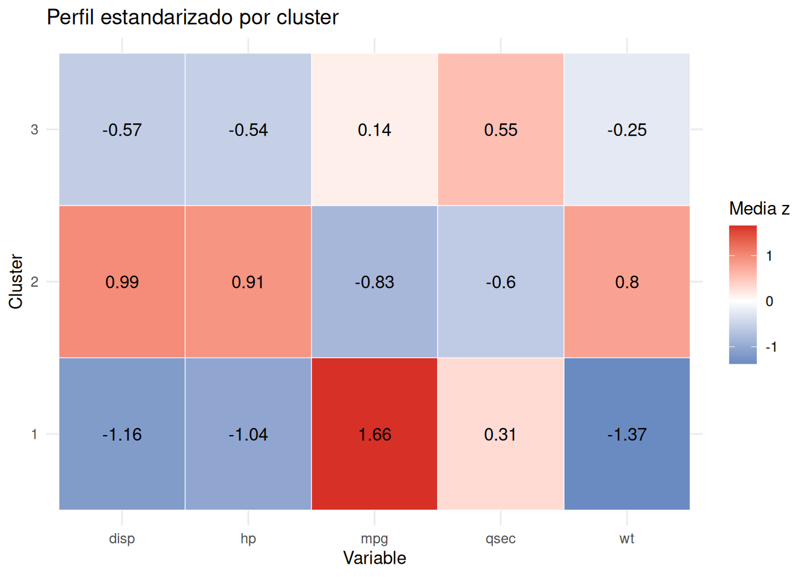
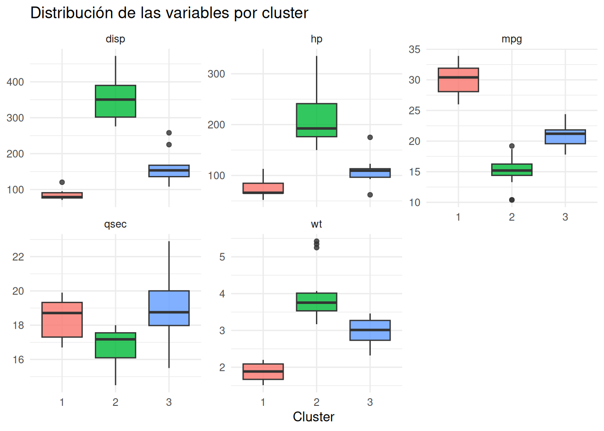
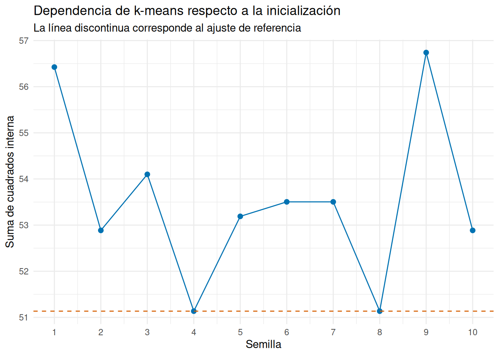

Código
library(tidyverse)
library(knitr)
source("FuncionesDistancias.R")
source("FuncionesJerarquico.R")
source("FuncionesKmeansPam.R")
source("FuncionesInterpretación.R")library(tidyverse)
library(knitr)
source("FuncionesDistancias.R")
source("FuncionesJerarquico.R")
source("FuncionesKmeansPam.R")
source("FuncionesInterpretación.R")Las filas representan individuos y las columnas, variables. La asignación de clusters debe guardarse en una columna de los datos y su nombre se pasa como texto. Las variables utilizadas en resúmenes, mapas de calor y boxplots deben ser numéricas.
Obtener etiquetas de cluster es solo el primer paso. Si no sabemos qué caracteriza a cada grupo, el análisis no es comunicable.
Nombrar clusters es una decisión interpretativa; debe estar respaldada por variables que realmente diferencien los grupos.
Una etiqueta como cluster 1 no significa nada por sí sola. Hay que describir tamaño, perfil medio, dispersión interna, variables distintivas y relación con etiquetas externas si existen.
set.seed(123)
variables_cluster <- c("mpg", "disp", "hp", "wt", "qsec")
datos_escalados <- preparar_datos_distancias(
mtcars,
variables = variables_cluster
)
ajuste_kmeans <- kmeans(datos_escalados, centers = 3, nstart = 25)
datos_cluster <- mtcars |>
mutate(
cluster = factor(ajuste_kmeans$cluster),
transmision = factor(am, labels = c("automático", "manual")),
cilindros = factor(cyl)
)
resumen_particion <- resumir_particion(
mtcars,
ajuste_kmeans$cluster,
variables_cluster
)
resumen_particion |>
select(cluster, individuos) |>
kable(col.names = c("Cluster", "Frecuencia"))| Cluster | Frecuencia |
|---|---|
| 1 | 6 |
| 2 | 14 |
| 3 | 12 |
| Nivel | Pregunta | Evidencia habitual |
|---|---|---|
| Descripción interna | ¿Cómo son los grupos según las variables que los construyeron? | perfiles, dispersión y tamaños |
| Caracterización externa | ¿Cómo se relacionan con información que no entró en el ajuste? | tablas de composición y variables suplementarias |
| Evaluación | ¿Son separados, estables y útiles? | silhouette, sensibilidad y comparación de soluciones |
| Explicación | ¿Por qué existen o qué los causa? | requiere evidencia adicional; el clustering no la proporciona |
Una diferencia externa puede ayudar a poner nombre a los clusters, pero no demuestra que esa variable los haya causado. Del mismo modo, obtener perfiles interpretables no demuestra que sean clases naturales de la población.
Las medias en variables originales son fáciles de comunicar.
resumen_clusters <- tabla_resumen_clusters(
datos_cluster,
cluster = "cluster",
variables = variables_cluster
)
resumen_clusters |>
mutate(across(c(media, mediana, minimo, maximo, sd), ~ round(.x, 2))) |>
kable()| cluster | variable | n | media | mediana | minimo | maximo | sd |
|---|---|---|---|---|---|---|---|
| 1 | disp | 6 | 86.65 | 78.85 | 71.10 | 120.30 | 18.37 |
| 1 | hp | 6 | 75.50 | 66.00 | 52.00 | 113.00 | 22.31 |
| 1 | mpg | 6 | 30.07 | 30.40 | 26.00 | 33.90 | 2.99 |
| 1 | qsec | 6 | 18.40 | 18.71 | 16.70 | 19.90 | 1.33 |
| 1 | wt | 6 | 1.87 | 1.89 | 1.51 | 2.20 | 0.28 |
| 2 | disp | 14 | 353.10 | 350.50 | 275.80 | 472.00 | 67.77 |
| 2 | hp | 14 | 209.21 | 192.50 | 150.00 | 335.00 | 50.98 |
| 2 | mpg | 14 | 15.10 | 15.20 | 10.40 | 19.20 | 2.56 |
| 2 | qsec | 14 | 16.77 | 17.18 | 14.50 | 18.00 | 1.20 |
| 2 | wt | 14 | 4.00 | 3.76 | 3.17 | 5.42 | 0.76 |
| 3 | disp | 12 | 159.98 | 153.35 | 108.00 | 258.00 | 43.20 |
| 3 | hp | 12 | 109.33 | 109.50 | 62.00 | 175.00 | 26.23 |
| 3 | mpg | 12 | 20.92 | 21.20 | 17.80 | 24.40 | 1.96 |
| 3 | qsec | 12 | 18.83 | 18.75 | 15.50 | 22.90 | 1.95 |
| 3 | wt | 12 | 2.98 | 3.01 | 2.32 | 3.46 | 0.39 |
Si las variables tenían unidades distintas, las medias estandarizadas ayudan a comparar qué rasgos están por encima o por debajo de la media global.
La media debe leerse junto con la mediana y la dispersión. Una diferencia entre medias puede proceder de un patrón general o de unas pocas observaciones extremas. Además, dos clusters con medias distintas pueden solaparse mucho: el perfil describe al conjunto, no a todos sus integrantes.
crear_heatmap_clusters(
datos_cluster,
cluster = "cluster",
variables = variables_cluster
)
El gráfico resume qué variables diferencian los grupos. Debe leerse junto con tamaños y variabilidad interna.
La estandarización del heatmap es global: cada celda indica cuánto se aleja la media del cluster de la media total, en desviaciones típicas del conjunto. No es una probabilidad ni la proporción de individuos que presenta ese rasgo.
crear_boxplots_clusters(
datos_cluster,
cluster = "cluster",
variables = variables_cluster
)
Los boxplots muestran si la diferencia entre perfiles medios es estable o si hay solapamiento.
Cuando la separación de cajas es clara, una variable distingue bien los grupos. Cuando hay mucho solapamiento, puede contribuir conjuntamente con otras variables sin servir por sí sola para asignar individuos. No conviene convertir un perfil multivariante en una regla basada en una única columna.
Cuando existe una etiqueta externa, se puede cruzar con los clusters.
tabla_composicion_clusters(
datos_cluster,
cluster = "cluster",
variable = "transmision"
) |>
kable(caption = "Composición de los clusters por transmisión")| cluster | categoria | frecuencia | porcentaje |
|---|---|---|---|
| 1 | manual | 6 | 100.0 |
| 2 | automático | 12 | 85.7 |
| 2 | manual | 2 | 14.3 |
| 3 | automático | 7 | 58.3 |
| 3 | manual | 5 | 41.7 |
tabla_composicion_clusters(
datos_cluster,
cluster = "cluster",
variable = "cilindros"
) |>
kable(caption = "Composición de los clusters por número de cilindros")| cluster | categoria | frecuencia | porcentaje |
|---|---|---|---|
| 1 | 4 | 6 | 100.0 |
| 2 | 8 | 14 | 100.0 |
| 3 | 4 | 5 | 41.7 |
| 3 | 6 | 7 | 58.3 |
Esta tabla no valida automáticamente el clustering, pero ayuda a interpretar qué estructura conocida captura.
La variable externa debe incorporarse después de cerrar la partición. Si se elige el método o el número de grupos buscando deliberadamente que coincida con ella, deja de ser una comparación verdaderamente externa y aumenta el riesgo de interpretar una coincidencia buscada como validación independiente.
Un nombre útil debe ser breve y estar justificado. En mtcars, por ejemplo, podríamos hablar de coches ligeros y eficientes frente a coches pesados y potentes si las medias lo sostienen.
Una pauta razonable es usar dos o tres rasgos realmente distintivos, indicar la dirección respecto al conjunto y evitar etiquetas valorativas. «Alta potencia y mayor peso» comunica evidencia; «coches buenos» introduce un juicio que el análisis no ha medido.
resumen_clusters |>
select(cluster, variable, media) |>
mutate(media = round(media, 2)) |>
kable()| cluster | variable | media |
|---|---|---|
| 1 | disp | 86.65 |
| 1 | hp | 75.50 |
| 1 | mpg | 30.07 |
| 1 | qsec | 18.40 |
| 1 | wt | 1.87 |
| 2 | disp | 353.10 |
| 2 | hp | 209.21 |
| 2 | mpg | 15.10 |
| 2 | qsec | 16.77 |
| 2 | wt | 4.00 |
| 3 | disp | 159.98 |
| 3 | hp | 109.33 |
| 3 | mpg | 20.92 |
| 3 | qsec | 18.83 |
| 3 | wt | 2.98 |
Los clusters pueden cambiar con pequeñas modificaciones: otra semilla, otra selección de variables o una observación atípica. Una comprobación sencilla es repetir k-means con varias semillas y comparar tamaños o tablas cruzadas.
evaluacion_semillas <- evaluar_semillas_kmeans(
datos_escalados,
k = 3,
semillas = 1:10,
ajuste_referencia = ajuste_kmeans
)
evaluacion_semillas$tabla |>
mutate(across(where(is.numeric), ~ round(.x, 3))) |>
kable()| semilla | suma_cuadrados_interna | ari_con_referencia |
|---|---|---|
| 1 | 56.425 | 0.475 |
| 2 | 52.885 | 0.270 |
| 3 | 54.100 | 0.485 |
| 4 | 51.135 | 1.000 |
| 5 | 53.190 | 0.748 |
| 6 | 53.504 | 0.748 |
| 7 | 53.504 | 0.748 |
| 8 | 51.135 | 1.000 |
| 9 | 56.740 | 0.661 |
| 10 | 52.885 | 0.270 |
evaluacion_semillas$grafico
La estabilidad frente a semillas solo estudia la parte algorítmica. También conviene preguntar si los perfiles sobreviven a retirar observaciones extremas, cambiar variables redundantes o considerar otro número de clusters razonable. Un cluster que cambia de número no es inestable: las etiquetas son arbitrarias. Lo importante es si cambian sus miembros y su significado.
Cuando dos soluciones son defendibles, la comparación debería centrarse en sus consecuencias:
Una solución más detallada no es automáticamente mejor. Puede revelar un subperfil útil o fragmentar artificialmente un grupo. La decisión depende de si la ganancia interpretativa compensa la pérdida de estabilidad y simplicidad.
Un informe mínimo debería responder:
| Elemento | Pregunta que debe quedar contestada |
|---|---|
| Objetivo | ¿Qué estructura queríamos encontrar? |
| Construcción | ¿Qué variables y definición de semejanza usamos? |
| Elección | ¿Por qué ese método y ese número de clusters? |
| Perfiles | ¿Qué distingue realmente a cada grupo? |
| Incertidumbre | ¿Qué decisiones alternativas cambian el resultado? |
| Alcance | ¿Qué no podemos concluir a partir del análisis? |
No es necesario presentar toda la exploración realizada. Sí hay que conservar la evidencia que permite entender la decisión final y sus límites.
Interpretar clusters exige volver a los datos originales, caracterizar perfiles y reconocer incertidumbre. La etiqueta de cluster es una ayuda, no una conclusión completa.
mtcars usando otro subconjunto de variables.am) y comenta si ayuda a interpretar los grupos.mtcars y justifícalos con medias.Las funciones principales empleadas en este tema son:
| Función | Para qué se usa | Uso básico |
|---|---|---|
kmeans() |
Obtener la partición que se quiere interpretar. | kmeans(datos, centers = k, nstart = 25) |
preparar_datos_distancias() |
Seleccionar y estandarizar las variables activas. | preparar_datos_distancias(datos, variables) |
tabla_resumen_clusters() |
Calcular medidas descriptivas por cluster y variable. | tabla_resumen_clusters(datos, cluster, variables) |
crear_heatmap_clusters() |
Mostrar las medias estandarizadas de los clusters. | crear_heatmap_clusters(datos, cluster, variables) |
crear_boxplots_clusters() |
Comparar las distribuciones de varias variables entre clusters. | crear_boxplots_clusters(datos, cluster, variables) |
tabla_composicion_clusters() |
Describir cada cluster mediante una variable externa. | tabla_composicion_clusters(datos, cluster, variable) |
evaluar_semillas_kmeans() |
Estudiar la sensibilidad de k-means a la inicialización. | evaluar_semillas_kmeans(datos, k, semillas) |